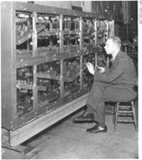
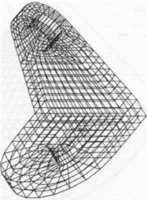
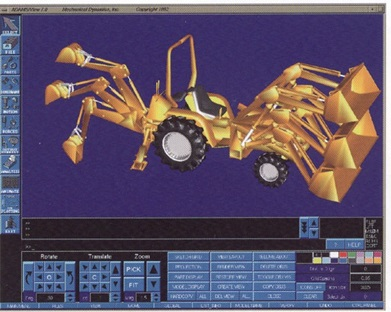
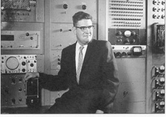
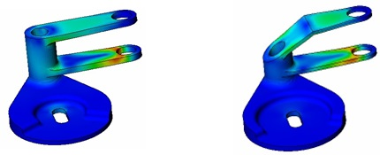
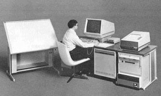

第22章：分析计算软件
用于结构分析的第一批计算机是模拟机，它们解决一系列微分方程。这些早期机器始建于20世纪30年代后期，采用机械结构，使用弹簧、齿轮和其他装置。约翰·威尔伯（John Wilbur）是麻省理工学院的土木工程教授，他制造了一台重要的模拟机，如图22.1所示。在20世纪40年代末期和整个50年代期间，电子模拟计算机越来越多地用于解决机械分析问题，特别是在航空航天工业中。这些计算机大多数在解决超过200自由度的问题时存在困难。

即使有这个限制，重要的压力和振动问题也得以成功处理。据MacNeal Schwendler公司（今天称为MSC.Software）创始人Richard MacNeal表示，巴黎的Sud飞机制造公司建造了一台模拟计算机，能够处理协和超音速飞机机翼结构的分析问题，涉及2000个自由度。这可能是模拟计算机的上限。显然需要更好的解决方案。
这个解决方案被证明是我们今天所知道的有限元分析或FEA技术。这种方法涉及将机械部件或建筑结构等物体分成小元素，然后使用这些元素之间的数学关系来计算由各种载荷条件引起的应力和挠度。FEA技术在20世纪50年代作为一种学术概念得到发展，并很快引起了航空航天业和NASA的结构分析师的关注。在很大程度上，本章重点关注于专门开发和营销与有限元分析（FEA）相关的软件的公司。
用于创建元素集的软件通常被称为有限元建模（FEM）软件。用来描述这些数据的术语通常是有限元网格，而该软件也被称为网格生成器。另一种描述分析问题复杂性的方法是陈述结构的自由度数量。这通常是元素数量的某个倍数。模型还可以根据节点数量来描述，即两个或多个元素相遇的顶点。
这个主题的最早论文之一是由Jonathan Turner领导的一组波音工程师在1956年发表在《航空工程杂志》上。另一位在这一领域的早期先驱是加州大学伯克利分校的机械工程教授Raymond Clough，他在1960年的ASCE会议上发表了一篇题为“平面应力分析中的有限元方法”的论文。正如下面所描述的，同时也有其他几个人正在尝试这种新的分析技术。

多年来，有限元分析（FEA）的性质发生了重大变化。早期的软件是在面向批处理的大型计算机上实现的。在引入计算机图形之前，构建FEA模型的最常用过程涉及获取要分析的物体的图纸，在这些图纸上布置网格，然后手动将物体分成离散元素。由于结果的准确性通常取决于模型中元素的数量，分析员试图在时间和预算的限制下将零件尽可能地细分。他们必须记住，计算解决方案所需的时间随模型中元素数量的增加呈几何级数增长。对于具有1,000个元素的零件的初始分析的整个过程需要几个星期。随后的分析通常需要几天。
每个元素都在编码表上输入，这些表交给打卡员并输入到打孔卡上，然后打卡上的数据被打印出来，以便工程师可以检查明显的错误。小的数值误差很难发现，缺少元素或缺少定义每个元素如何连接到相邻元素的信息也很难发现。这些连接点称为节点。只有在数据经过手工彻底检查后，才能通过FEA程序运行并打印出结果。一些组织使用制图仪创建FEA输入数据的图纸或说明结果，但并不多见。更常见的情况是通过一页一页的数字清单进行结果审查，并手动绘制这些信息。
这个过程极其繁琐、易错且昂贵。即使是中等规模的问题也需要在相当大的计算机上投入大量时间。准备数据时稍有错误，就可能使这些昂贵的计算机运行变得毫无价值。如果有限元分析要实现其承诺，这个过程需要从头到尾的改进。许多公司开始设想使用交互式图形作为改进这个过程的手段。
到了 1970 年代中期，计算机图形系统开始用于准备有限元分析数据和查看结果。例如，麦克唐纳-道格拉斯自动化公司提供了一个名为 FASTDRAW 的分时程序，可以用于创建元素数据，然后将信息传输到主机分析程序中。SDRC 是另一家提供此类软件的公司，如第 17 章所述。当时，大多数分析工作都由受过高度教育的工程师和数学家完成，通常具有博士学位。
十年后，大多数 CAD 供应商提供了可以采用最少用户干预生成有限元分析输入数据的程序。随着网格生成过程的自动化程度越来越高，模型变得越来越大。一个大模型由 100,000 个元素组成并且使用的元素类型越来越多。其中一些非常复杂，以解决涉及薄壳结构的问题。即使在 1990 年代早期的计算机上，一个大问题仍可能需要几天时间来解决，甚至是在超级计算机上。其中一个结果是，加强了对开发新的数学程序的关注，使分析师能够以经济的方式解决越来越大的问题。
今天，大型模型可能由数百万个元素组成，但可以在桌面计算机上相对较短的时间内解决。一个主要变化是现在设计工程师和分析专业人员通常会交互使用FEA软件。如果工程师试图减轻零件的重量，则可以使用可优化零件形状的软件。在一些行业中，FEA模拟已经消除了大部分或全部物理原型阶段。今天，在汽车工业中进行的碰撞分析主要使用FEA而不是建造物理原型并将其撞入墙壁。
《计算机辅助设计报告》1992年3月刊列出了28家提供有限元分析软件的不同公司。其中一些，包括Computervision和Intergraph，在不同的章节中讨论，而其他公司在本章中讨论。然而，空间限制不允许涵盖每个公司。
ABAQUS（Hibbitt，Karlsson＆Sorensen）
ABAQUS的早期历史与本章稍后描述的MARC Analysis Research Corporation的早期历史紧密相连。这两家公司均起源于1965年左右在罗德岛普罗维登斯的布朗大学的工作。David Hibbitt在完成了涉及使用FEA方法的计算力学的论文后于1972年从布朗大学获得博士学位。Hibbitt受聘于MARC Analysis Research Corporation，该代码成为了最初MARC软件的基础。Paul Sorensen在MARC短暂工作后返回布朗大学完成博士学位。
在1970年代和1980年代的大部分时间里，MARC通过时分共享的方式提供给用户，特别是通过Control Data Corporation的Cybernet服务。Bengt Karlsson博士在瑞典的CDC工作，支持许多不同的分析程序。1976年，他移居美国，并加入了MARC。
一年后，Hibbitt决定成立一家新公司来开发和销售可供广泛工程师使用的有限元分析软件。这个软件被称为ABAQUS。Karlsson和正在通用汽车公司工作的Sorensen也加入了这个项目。他们三人于1978年2月创立了Hibbitt，Karlsson和Sorensen或HKS，后者是最常用的名称。
与MARC一样，ABAQUS最初通过CDC的Cybernet服务进行分发。该公司的第一个客户是西屋汉福德公司，该公司使用该软件分析核燃料棒组件。多年来，ABAQUS在复杂项目中，如海上石油和天然气平台以及汽车工业的车辆仿真中发展出了一批忠实的工程师用户。该公司因与ABAQUS用户密切合作，决定集中开发资源而声名鹊起。
基本软件最终被称为ABAQUS / Standard，并且还有其他软件工具，包括ABAQUS / Explicit（1991年发布的动态分析软件包）和ABAQUS / CAE（1999年发布的用于从CAD数据构建FEA模型的软件包）。公司的名称于2002年底更改为ABAQUS，Inc.以反映该公司对该产品系列的关注。然后，在2005年10月，该公司与其525名员工以4.13亿美元的价格被达索系统收购，约为公司约1亿美元的年收入的四倍。
当公司被达索收购时，David Hibbitt仍然担任该公司的主席，而Mark Goldstein则是总裁兼首席执行官。
ANSYS（Swanson Analysis Systems）
John Swanson在1963年加入匹兹堡的Westinghouse Astronuclear实验室担任结构分析经理。在Westinghouse工作期间，他于1966年在匹兹堡大学完成了应用力学博士学位的研究。他之前在康奈尔大学获得了机械工程学士和硕士学位。在Westinghouse工作期间，Swanson推广了使用计算机模型来预测核反应堆受热和压力载荷引起的应力和位移。
他意识到这种分析技术的未来潜力，建议Westinghouse开始开发通用的有限元分析（FEA）软件。当公司拒绝他时，他决定在1970年创办自己的公司，即Swanson Analysis System。公司旗舰产品ANSYS的第一个版本是在美国钢铁公司使用分时共享的大型计算机开发的。该软件的初始版本于1970年末完成，Swanson的第一个客户是Westinghouse。
虽然最初的 ANSYS 是在主机和超级计算机上实现的，Swanson 是早期支持新一代 32 位小型计算机（如 Digital VAX 11/780）的人，这种计算机在工程和学术界迅速流行。该公司还认识到模型准备和结果查看软件的需求。其流行的有限元建模（FEM）软件包被称为 PREP7，而其查看程序则为 POST1。使用所有三个提供了一个良好的集成 FEA 解决方案。
在接下来的十年中，公司逐渐建立了市场地位，成为备受尊敬的技术软件供应商，尽管规模不是很大。该公司在1992年收购了开发 FLOTRAN 软件的 Compuflo, Inc.，进军计算流体力学领域。 1994 年初，总部位于马萨诸塞州波士顿的投资公司 TA Associates 获得了 Swanson Analysis 的大部分股份。这项交易的一个结果是，John Swanson 放弃了总裁和首席执行官的职位，未来五年担任首席技术专家。他被 Peter Smith 取代，Peter Smith 是一位前数字设备公司的高管，很快将公司更名为 ANSYS, Inc。Swanson 仍然是该公司的主要股东，并一直担任董事会成员直到 2000 年初。
到 1994 年底，该公司专注于几个技术目标。 ANSYS Designer Series 被推广为设计工程师友好型软件，以便可以解决许多问题，而不需要使用分析专家。 ANSYS 5.1 也越来越多地用于设计优化。该软件支持100多种不同的元素类型，并能够解决静态和动态问题，包括线性和非线性情况。自适应网格自动调整有限元网格的大小，直到解决方案收敛。此前，这对工程师来说是一个耗时的任务。
ANSYS 5.1还包括新的解决方案技术，其处理FEA模型的速度比早期版本快一个数量级，虽然两到四倍更快是更典型的。随着拥有超过100,000个元素的模型变得越来越普遍，性能变得越来越重要。这是John Swanson在不再担任总裁后花费相当大一部分时间的领域。显著的性能增强定期纳入后续软件发布中。特别是，在应用多处理技术进行FEA计算方面，ANSYS是领先者。今天，ANSYS经常用于解决具有超过一百万个元素的模型。
ANSYS还与CAD软件供应商密切合作，包括PTC和Autodesk，以将其软件与各种CAD软件包集成。其ANSYS / AutoFEA软件包于1994年10月推出，与AutoCAD Release 12紧密集成，售价仅为1,200美元。更高级的版本，ANSYS / AutoFEA 3D于1996年6月发布，建议价格为3,800美元。
该公司被认为是多物理问题解决领域的领导者。这指的是分析师处理涉及结构、热、电磁和振动力组合的问题的情况。1996年6月，该公司进行了首次公开发行，以每股13美元的价格出售3,580,000股股票，为公司筹集了超过4600万美元。随后不久，公司的300名员工搬到了宾夕法尼亚州坎农斯堡的一家新设施，距匹兹堡以西15英里。
在1995年至1999年期间，该公司的商业模式发生了显著变化。尽管总收入从3960万美元上升到6320万美元，软件租赁收入却从1810万美元下降至1660万美元。与此同时，服务收入增长了两倍以上，从700万美元增加到了2220万美元，而完全购买许可证的销售额也近乎翻了一倍，从1450万美元增加到了2440万美元。
Jim Cashman于1999年4月成为ANSYS的总裁，并于2000年2月成为首席执行官。在此之前，他曾在PAR Technology Corporation、Metaphase和SDRC工作，并于1997年加入该公司担任运营副总裁。他取代了仍担任该公司董事长的Smith。2003年2月，ANSYS以2170万美元收购了计算流体动力学软件公司CFX。
2001年2月，Applicon前首席执行官Brad Morley加入ANSYS董事会。近年来，该公司表现不俗，2005年收入超过了1.55亿美元。2006年5月，ANSYS以股票和现金的形式完成了对计算流体动力学（CFD）软件供应商Fluent的收购，收购价格为5.65亿美元。结果是一个拥有大约1,350名员工和2006年净收入近2.64亿美元的公司。
计算机辅助设计软件公司（CADSI）
计算机辅助设计软件公司（CADSI）始于爱荷华大学机械工程教授爱德华·豪格（Edward Haug）的研究成果。约在1980年，密歇根州底特律的美国陆军坦克和汽车指挥部（TACOM）的工程师们有意改进用于求解受限多体机械系统的运动方程的数学算法和公式。这导致TACOM在爱荷华大学资助了一项研究，用于车辆动力学的计算机模拟。豪格教授及其同事于1982年向军方交付了该软件。
对该软件的初步测试证实了动态分析和设计系统（DADS）算法的数值精度，软件很快演变成能够处理各种卡车和坦克模拟的软件。在DADS之前，TACOM测试的所有软件包均未能提供必要的数值稳定性、准确性和可靠性。1983年，豪格决定建立一家基于这项动力学技术的公司，于是在爱荷华州奥克代尔成立了CADSI，以开发软件产品和提供咨询服务。该公司的主要竞争对手是机械动力学公司（Mechanical Dynamics），下面将进行讨论。
到1985年，豪格认为自己更有兴趣成为一名教授而不是一名商人，于是招募了Applicon研发副总裁雷克斯·史密斯（Rex Smith）担任CADSI的总裁兼首席执行官。史密斯早些时候曾在SDRC担任过类似的职位。DADS的第一个商业版本于1986年向客户发布。DADS是最早的运动分析软件之一，具有图形预处理器和后处理器。该软件可以运行在广泛的计算机平台上，包括个人电脑和UNIX工作站。1989年，该软件的价格为27,000美元。与波音公司合作，CADSI还开发了一个与达索系统CATIA集成的DADS版本，称为CATDADS。不久，还开发了与SDRC的I-DEAS和PTC的Pro/ENGINEER的其他接口。
在1994年中期，IBM授予CADSI销售PolyFEM的许可证，这是由IBM在加利福尼亚州圣何塞的Almaden研究实验室开发的线性结构分析软件包。该软件最初是为与CATIA配套使用而编写的。在1996年，IBM与几家公司就出售PolyFEM技术进行了讨论。尽管CADSI是中标者，但它不得不筹集外部资金来为此支付购买费用。CADSI希望将PolyFEM出售给已经使用DADS的Pro/ENGINEER用户，但PTC收购了Rasna（见第16章），这使得这一目标变得困难重重。
CADSI将DADS和PolyFEM与SolidWorks界面组合在一起，推出了名为DesignWorks的产品。当时，CADSI是唯一一个提供将动态分析与结构分析相结合的软件产品的公司。
1999年初，总部位于比利时的LMS International收购了CADSI。目前仍在销售各种版本的DADS，其中包括与宝马合作开发的DADS/Engine。然而，PolyFEM已不再销售。
计算机和结构公司（Computers and Structures, Inc.，简称CSI）
是FEA领域的早期先驱之一，最初由加州大学伯克利分校的Edward L. Wilson博士开发了结构分析程序（Structural Analysis Program，简称SAP），该程序于1970年首次发布。
1975年，Ashraf Habibullah成立了CSI公司，旨在推广和支持SAP，该软件至今仍广泛应用于土木结构分析和设计领域。CSI公司的产品在美国境内和其他100多个国家得到了数千家结构工程公司的许可。当前的SAP2000软件主要用于桥梁、大坝、体育场馆、工业建筑和建筑物等结构的分析和设计。此外，公司还开发了其他针对多层建筑结构的软件，如办公楼、公寓和医院。
MARC Analysis Research Corporation
虽然它从未成为机械CAE领域的主要参与者，但MARC Analysis Research Corporation是该行业的先驱之一。该公司始于1965年，当时罗德岛普罗维登斯的布朗大学的一群研究人员开始开发有限元软件，最终成为一个名为MARC的商业软件包。
该公司成立于1971年，第一个版本的MARC软件于1972年推出。多年来，MARC成为非线性分析软件领域的领先供应商之一。关于非线性分析的含义，可能需要简单解释一下。我们所生活的世界很大程度上并不是线性的。例如，橡胶等材料对载荷和约束的响应远不同于大多数金属物体。例如，汽车门密封件、减震器支架和垫片。
金属产品在成型时的响应也与使用时不同。一个很好的例子是通过热锻造制造的零件。在热金属被刚性模具塑造时，它处于弹性状态。随着材料的冷却，零件的形状会发生变化。这个过程变得更加复杂，因为即使是相当大的模具在成型过程中也会变形。MARC的非线性有限元分析软件被用来使这个过程更加可预测，并减少了以前需要的许多物理原型。
MARC分析研究公司的早期员工之一是David Hibbitt，他于1972年在布朗大学完成了博士论文。论文涉及基于有限元方法的计算力学。他在布朗大学开发的软件构成了MARC最初版本的基础。MARC软件在CDC Cybernet服务的支持下通过分时方式提供给用户。 CDC在整个20世纪70年代和80年代提供了MARC的访问。Hibbitt一直在MARC工作直到1977年离开，开始开发前面讨论过的ABAQUS FEA软件。
MARC软件是一个通用的FEA程序，旨在进行高级工程分析。它支持超过130种不同的元素类型，便于建模从薄壳到电缆等一切事物。MARC包含一种自适应网格方法，该方法增加了使用的元素数量，直到满足预先建立的误差标准。该公司特别关注建模零件之间的间隙，并考虑了应力和温度在不断或间歇接触的零件之间的传播。该软件专门处理了可变形物体（例如橡胶支架）接触刚性表面的情况。
尽管MARC可以接受第三方软件包生成的有限元网格，该公司还提供了自己的建模程序Mentat II。该软件包允许用户从CAD系统导入几何形状，或者可以直接在Mentat II中创建几何形状。 1996年，通过将Spatial Technology的ACIS几何内核纳入Mentat II，后一种方法得到了改进。
在1990年代中期，MARC试图通过提供应用特定的解决方案来扩大其客户群。其中之一是MARC/AutoForge。该程序将有限元分析应用于热和冷的金属成型，例如锻造、挤压、轧制和多级制造过程。在将有限元用于这些过程时，基本技术问题是随着金属的变形，用于建模零件的有限元也会被变形。很快，模型就无法提供准确的结果。MARC/AutoForge通过在分析成型过程的每个步骤中不断地重新构建模型来解决这个问题。
从1970年代末到1992年，MARC在有限元分析市场上是一个备受尊敬但相当不重要的参与者。1992年，该公司聘请Lou Crain担任总裁兼首席执行官。Crain曾在PDA Engineering任职，从1975年到1989年，其中包括担任该公司的PATRAN部门负责人。到1996年，Crain已将MARC的收入增加到每年约2000万美元的水平，并在接下来的几年中保持了这个水平。
公司的金融支持者认为，MARC不会成为这个市场的主要参与者，Crain于1998年末离开了公司。1999年5月，MacNeal-Schwendler Corporation（现在的MSC.Software，如下所述）以3600万美元的价格收购了该公司。
机械动力学公司（MDI）
机械动力学公司是由一群密歇根大学工程师于1977年在安娜堡成立的咨询公司。创始人包括迈克尔·科瑞巴尔斯基和约翰·安格尔，两人在MDI工作了数十年，科瑞巴尔斯基担任总裁兼首席执行官，安格尔担任首席技术专家。第三位创始人是米尔顿·查斯，他是该大学的机械工程教授。三人在创立MDI之前开发了一个二维机构分析软件包，称为动态响应关节机械（DRAM）。公司早期办公室位于U of M校园附近的一家冰淇淋店上面。
MDI的早期工作很快使其集中于分析机械机构。当设计具有复杂运动部件的物体时，工程师面临两个主要问题-机构是否按预期运动，以及物体在运动过程中施加在这些部件上的负载是什么。例如，考虑在采矿操作中使用的大型前装式装载机。如果该装置静止不动，设计师可以估计在斗的特定方向时对机构每个部件的力。但是，如果装载机在升起斗时移动，其中一个轮子掉入了一个大洞，该怎么办？
该公司的产品套件名为机械系统自动动态分析（ADAMS）。有许多不同的模块用于建立模型、解决机械方程、验证拟议设计的基本运动、模拟复杂操作和查看结果。该公司业务的主要部分来自汽车和卡车制造商。MDI专门为这个行业开发了ADAMS模块，包括用于帮助设计悬挂系统和研究拟议车辆操纵性的ADAMS/Vehicle。
ADAMS可以运行在多种32位计算机上，包括数字设备公司和Prime公司销售的计算机，以及UNIX工作站和个人电脑。在1990年代中期，包括ADAMS/View和ADAMS/Solver的ADAMS完整仿真套件在UNIX平台上售价为24000美元，在个人电脑上售价为10000美元。

MDI在1996年中期上市时，年收入约为2500万美元，到2001年增加到5700万美元。2002年3月，MSC.Software以现金交易约1.2亿美元收购了MDI。
Moldflow
大多数塑料零件是通过注塑成型工艺制造的。一旦零件被设计好，就会加工出与零件形状对应的模具。将模具放置在注塑机中，注入热塑料到模具中，待塑料冷却后就可以取出，然后重复这个过程。目标是快速生产出冷却后不会缩小或变形，并忠实地呈现最初设计的零件。在模具分析软件推出之前，这是一个反复试错的过程，通常需要几组模具和冷却管才能生产出合格的零件。
Moldflow Pty. Ltd.成立于1978年，由Colin Austin创立于澳大利亚，并很快推出了第一个塑料注塑成型过程分析软件包，使用了有限元分析的形式。该软件的目的是确定指定温度下塑料是否能流动到模具的所有部分，并且该塑料是否能均匀冷却。
在1980年代和1990年代初期，公司的商业模式主要是与主流CAD软件供应商协商联合营销协议。几乎每个这样的公司都提供与Moldflow软件的接口，并且许多公司会转售该软件。在1980年代中期，公司在全球范围内开设了几个设计中心，从财务角度来看，这些中心并不成功。1987年，Austin聘请Hugh Henderson接管公司的日常管理工作。他的第一步是关闭设计中心。一些运营这些中心的人员成立了自己的独立模具设计业务。
到了1989年中期，Moldflow的软件已经在18个不同的平台上可用，从个人电脑到Cray超级计算机不等。该公司的产品包括:
• Moldflow用于模具充填分析
• Moldtemp用于模具冷却分析
• MetlFlow用于预测压铸的充填情况。
软件的定价基于它运行的处理器的等级。当时，这些成本范围从每个软件包每年的6,000美元到30,000美元不等。该公司还正在开发一款用于缩小和变形分析的软件包。
1996年6月，曾经是PTC营销副总裁的马克·德卢德成为Moldflow的总裁兼首席执行官，该公司的总部从澳大利亚迁至美国。目前的公司总部位于马萨诸塞州弗雷明翰。
到1997年，在50多个国家/地区中，Moldflow Dynamic Series软件的用户超过4,500名。此时，该公司拥有大约100名员工和每年1,600万美元的收入。除了Dynamic Series全面的分析能力套件（此软件从39,000美元起售），该公司还在1997年推出了一个更低成本的软件包Part Advisor。它的单个许可证价格为9,000美元。
Part Advisor软件与多种不同的CAD软件（包括Pro/ENGINEER和SolidWorks）紧密集成。它使用简化的方法来定义需要分析的零件数据，并包含了一个材料库，使得选择塑料材料变得非常容易。分析结果（例如模具填充的时间）用彩色编码的可视图像表示。
其中一个特别相关的输出是“填充置信度”图表，显示了零件中存在高、中、低置信度的区域。基于此输出，设计师可以改变零件的形状、修改材料注入的位置、改变材料的温度甚至改变材料的类型。该软件极大地提高了注塑过程的生产效率，并减少了初期生产符合要求的零件所需的时间。公司在随后的几年中推出了许多其他的模具分析软件包。
Moldflow于2000年上市，并随后收购了C-MOLD，另一家重要的注塑分析软件供应商。截至2007年中期，该公司的股票价格约为23.00美元/股。这比2002年10月的最低价4.00美元/股要好得多，但仍低于2001年初的30.00美元/股。该公司年收入约为7000万美元，是十年前的四倍多。目前公司员工略超过300人。
Roland Thomas在1982年加入了该公司，曾在1997年至2002年担任研发副总裁，于2002年6月取代Delude成为总裁兼首席执行官。
MSC.Software（McNeal-Schwendler Corporation，PDA Engineering，Mechanical Dynamics，Knowledge Revolution，MARC Analysis Research Corporation）
今天的MSC.Software是多个公司的集合，这些公司多年来一直是竞争对手。其中大部分在本章中有单独描述，而本节主要关注MSC本身。MSC的早期历史大部分来自公司创始人之一理查德·麦克尼尔博士在1988年撰写的一本迷人的书籍《麦克尼尔肖恩德勒公司-前20年》，这是一本由公司出版的限量版书籍，坦率地谈论了推广有限元分析作为一种工程技术所面临的挑战。
MSC由麦克尼尔和罗伯特·肖恩德勒于1963年创立。在创立MSC之前，麦克尼尔在1949年获得了加利福尼亚理工学院的电气工程博士学位，并加入了该校的分析实验室。当时，工程分析大多是在模拟计算机上完成的。实验室的一些员工，包括麦克尼尔，于1952年组成了计算机工程协会（CEA），商业化了实验室的工作，建造模拟计算机。麦克尼尔一直在CalTech担任教职员工，直到1955年，那时他去了洛克希德（Lockheed）工作。一年后，他回到CEA，最终成为工程分析经理。
1960年，麦克尼尔在访问得克萨斯州沃斯堡的通用动力公司的康威工厂时遇到了鲍勃·肖恩德勒。肖恩德勒是负责模拟飞机设计的模拟计算机的工程师。麦克尼尔向肖恩德勒提供了一份在CEA的工作，并得到了肖恩德勒的接受。
MSC公司是由MacNeal和Schwendler在1963年初与Arlyn Winemiller一起创建的，Winemiller曾在丹佛的Martin公司工作，后来加入了CAE成为第三位创始人。这家公司最初的启动资金是由三位创始人提供的1.8万美元。公司的唯一其他员工是Grace Hunter，她曾经是MacNeal在CAE的秘书。MSC最初的业务旨在提供工程咨询和分析服务，尽管他们不确定后者是用模拟还是数字计算机来完成。该公司的第一个项目是对一座拱坝进行分析，他们编写了第一个FORTRAN计算机程序，名为SADSAM（通过模拟模拟方法进行结构分析）。在公司的第一年，他们的收入约为9万美元，利润为866美元。MSC一直使用SADSAM直到1976年，其使用至少一直延续到1988年的休斯直升机公司。

MSC历史上最重要的项目当然是其对NASTRAN（NASA结构分析）开发的工作。到1964年，几家航空航天公司已经开发出了专有的有限元分析软件，但是其他公司或大学的工程师没有可用的软件可以使用。大约在这个时候，NASA开始制定一个通用的有限元分析程序的规范，并在1965年7月发布了一份请求提案。MSC与计算机科学公司联合投标这个项目，之前未能与IBM或洛克希德达成协议。位于马里兰州巴尔的摩的Martin飞机公司随后成为该团队的第三个成员。1965年12月，由CSC担任总承包商的MSC团队，获得了两个合同之一，即准备技术评估报告的合同。另一个合同授予了由道格拉斯飞机公司领导的团队。MSC的报告于1966年春季提交，同时提出了一个以略高于100万美元的成本实施该软件的提案。
MSC团队在1966年7月获得了开发NASTRAN 9的合同。MSC负责定义软件的分析方面，而CSC的人员则负责实际编程。大部分数学工作由Caltech的Caleb W.（Mac）McCormick教授完成，他请了一次长假来参与该项目，并随后全职加入了MSC。由于需要解决许多与有限元分析过程基本相关的技术问题以及NASA计算机的不足，NASTRAN的开发被延迟了。大部分编程工作都是在IBM 7094和CDC 6600上完成的，尽管到了最后，IBM 360计算机扮演了重要的角色。软件于1969年交付给戈达德航天中心。尽管按照今天的标准来看还很小，但该程序能够处理超过10,000个自由度的问题。
在1965年到1970年期间，MSC总共从CSC收到了63.5万美元的资金用于开发NASTRAN。该软件的版本最终被称为COSMIC NASTRAN。COSMIC是由佐治亚大学运营的联邦资助计划，用于以较小的复制费用分发政府开发的软件。最初，COSMIC NASTRAN的费用为1,750美元。NASTRAN是一个庞大的程序，由超过150,000个FORTRAN语句组成。在此期间，MSC继续开发和销售模拟计算机组件，尽管到1972年，这项活动的收入已经非常少了。
大约在1969年，MSC开始开发一项咨询业务，帮助公司安装和利用NASTRAN，包括Vought、Aerojet、Bell Helicopter以及一些政府实验室。从1971年6月开始，MSC还被NASA授予了几项NASTRAN维护合同，由控制数据公司担任编程子承包商。这一安排一直持续到1974年初，当时NASA认为MSC在这项合同中利用不当，涉及其它咨询业务，因此双方分道扬镳。
早在1971年，MSC和NASA的NASTRAN版本就开始分道扬镳，导致该公司的专有实现被称为MSC/NASTRAN。该公司开始向其他公司提供MSC/NASTRAN支持服务，每月收费500美元。第一个采用这种安排的客户是位于密苏里州圣路易斯的麦克唐纳道格拉斯公司。该公司还开始按版税方式向服务机构提供其软件。控制数据公司很快就成为MSC租赁和版税收入的60%生产者。在接下来的几十年中，对其软件收取月费或年费而不是出售完全付费许可证成为MSC的基本商业特征。
该公司在德国慕尼黑开设了一个由莱昂纳德·彼得森运营的欧洲办事处，以及一个由H·渡边运营的日本办事处。麦克·麦考米克在这两个国际努力中都发挥了关键作用，甚至学习日语以更好地与日本客户合作。
MSC继续快速扩展其NASTRAN版本，包括新的元素类型和新的分析过程。到1976年初，MSC/NASTRAN中只有不到30％的代码与COSMIC NASTRAN相同。新的功能包括由Peterson在德国开发的预处理器MSGMESH。此时，MSC/NASTRAN被用于解决具有多达30,000自由度的问题。到1978年，MSC已经签订了85个MSC/NASTRAN使用合同，该年版税收入将近140万美元，其中大部分来自于与数据中心（如CDC）的合同。MSC现在向其工业客户收取每月1000美元的MSC/NASTRAN费用，而NASA已将其对COSMIC NASTRAN的费用提高到每年4000美元。
在1970年到1976年期间，MSC在管理上非常谨慎。公司在这期间的员工数量大约为20人。从那时起，由于MSC/NASTRAN等收入的增长，公司开始快速增长，年增长率高达40%。约瑟夫·格洛德曼博士于1978年从洛克威尔公司加入公司。MacNeal热情地招募他，因为格洛德曼博士带来了公司现任高管所缺乏的一定的管理经验。他也被视为MacNeal的潜在继任者，当时MacNeal已经55岁了。最初他被聘为市场营销和高级产品开发主管，不久后成为公司的总裁兼首席运营官。
1979年，公司在新英格兰地区开设了一个分部，由哈里·谢弗博士负责。实际上，成立了一个名为Shaffer Analysis, Inc.的新公司，MSC持有80%的股份。谢弗曾是马里兰大学的教授，他的主要角色是继续培训人们使用有限元分析技术，重点是MSC/NASTRAN。谢弗还在20世纪80年代早期举办了一系列关于有限元建模技术的会议，名为“有限元建模的乔托奎阿”。谢弗与MSC的关系持续了几年，然后他以基本上与MSC最初投资相同的价格购买了MSC在他的公司的股份。
直到1978年，MSC/NASTRAN只能在CDC、Univac和IBM等大型计算机上运行。这些计算机价格昂贵，MSC无法购买自己的计算机。随着32位计算机如Digital VAX 11/780的引入，情况发生了改变。1978年中期，MSC与Digital协商一项协议，将其软件移植到这台新机器，并在那年秋季安装了一台11/780。几个月后，公司已经开始运行MSC/NASTRAN，到1983年1月，有64个客户使用这台机器。
重大变革发生在1979年1月2日，当时Bob Schwendler意外去世。Mac McCormick接替他成为执行副总裁，Joe Glouderman成为市场副总裁。
除了VAX 11/780外，MSC开始支持从Apollo工程工作站到Cray超级计算机等各种其他计算机。在20世纪80年代初，软件开发专注于增加非线性能力以及对预处理和后处理的工作。在后者领域，MSC/GRASP是1982年发布的新套件。然而，许多MSC客户使用PDA Engineering的PATRAN软件进行此功能。
长达十年多的时间，NASA和MSC之间的关系基本上没有问题。这在1980年8月26日一封信中突然终止，NASA在信中声称MSC不当地使用了在1970年代初期和中期MSC为NASA执行NASTRAN维护工作时开发的软件代码。这封信是NASA一年多前启动审计的结果。根据MacNeal的说法，审计很可能是由Universal Analytics的总裁Tony Cappelli提出的投诉所引发的。该公司转售称为UAI/NASTRAN的COSMIC NASTRAN的版本。
与NASA的争端拖了两年多，最终MSC支付NASA 125,000美元以获取其先前根据与NASA签订的合同开发的软件的所有权。这远远少于政府最初想要的数百万美元。问题的解决对于MSC正在准备上市至关重要。MSC于1983年5月5日以29美元的初始价格进行了公开发行。当天收盘价为36.75美元。在此过程中，公司筹集了约1000万美元，股东出售了超过2500万美元的股票。MSC的股票在美国证券交易所上市。Joe Glouderman于1985年3月成为CEO，此时Dick MacNeal退休。这种情况持续到1991年，当时公司的盈利短缺。Glouderman被迫离开CEO职位，MacNeal重新加入公司担任总裁兼CEO。
公司继续以相当一致的速度增长，截至1993年1月31日的年收入达到6500万美元，利润为1200万美元。软件开发包括引入电磁分析（MSC/EMAS）和动态分析（MSC/DYTRAN），以及支持越来越多的计算机系统，包括惠普和Sun Microsystems工作站。公司继续按年度授权其软件，同时开始销售完全预付的许可证，其成本取决于所使用的计算机的性能和可以分析的最大模型大小。
一款新的 MSC/XL 前后处理器被推出，以及一个集成了 Aries Technology 软件的版本（参见第 21 章）。后者被称为 MSC/XLplus。与 Aries 的合作最终导致 MSC 在 1993 年以 2000 万美元的价格收购了该公司。随着这次收购，Larry McArthur 成为总裁兼 COO，而 Dick Miller 则成为 MSC 的企业营销副总裁兼 Aries 部门的总经理。管理团队的另一个关键成员是 Dennis Nagy 博士，他担任高级副总裁，负责运营。Aries 收购的一个副产品是，MSC 总部负责 MSC/XL 的人员被重新分配到 Aries 部门。另一方面，Aries 的销售组织则被吸收到 MSC 的销售运营中。
不到一年后，MSC 又以 5600 万美元收购了 PDA Engineering（见下文）。当时，MSC 是一家 8000 万美元的公司，而 PDA 每年的业务额为 4200 万美元。此次收购是基于两个观察结果推动的。首先，MSC 的管理层认为机械设计市场即将经历重大整合——这一立场被证明特别敏锐，尽管可能比他们预期的要花更长的时间。另一个观察结果是，这两家公司正在不成比例地投入资源来开发彼此竞争的软件。计划是 Aries 提供针对设计工程师的软件，而 PDA 则针对专业分析师。PDA 收购的时候的 CEO Lou Delmonico 很快离开了，但 PDA 的总裁兼 COO Tom Curry 留在了合并后的公司。
收购的产品分别更名为 MSC/ARIES 和 MSC/PATRAN。McArthur 在 1994 年 9 月底离开了 MSC，而 Miller 几个月后离开了。该公司宣布已经开始寻找新的总裁兼 CEO。1994 年 11 月，MSC 展示了售价为 5000 美元的 MSC/NASTRAN 的 Windows 版本。在财务方面，该公司正在努力增加合并后的 PDA 和 MSC 业务的收入。直到 1996 年，才开始朝着正确的方向前进。
和其他大多数有限元分析软件公司一样，MSC努力提高其分析软件的性能。在1995年中期发布的MSC/NASTRAN 68.1版本比之前的版本快得多，使用户能够在合理的时间内处理更大的模型。公司还开始与CAD软件公司更紧密地合作，可能是受到因Aries和PDA收购而加入公司的人员的影响。一个例子是，1995年末，MSC与EDS Unigraphics签署了联合开发和营销协议，以及与Matra Datavision签署了协议，后者分发了MSC/NASTRAN的一个子集QUICKSOLVER。
MSC在1996年3月将Curry提升为总裁和CEO。几个月后，公司决定专注于结构分析问题，并将其电磁分析业务以560万美元的价格出售给Ansoft。MSC开始集中于特定的市场细分领域。公司成立了肯尼斯·布莱克利领导的航空航天部门和托马斯·特科领导的汽车部门。
1997年8月的一个重要发展是发布MSC/PATRAN的Windows版本。随后，在11月，推出了MSC/InCheck，它在SolidWorks 97Plus内提供了应力、振动和屈曲模拟。几个月后，该软件包的新版本增加了形状优化和稳态传热模拟功能。1998年12月，Curry被Frank Perna Jr.取代，后者还成为董事长，接替了曾担任董事长的George Riordan。Perna此前曾担任高科技电子制造商EOS Corporation的CEO。大约在同一时间，MSC宣布计划以1900万美元现金收购Knowledge Revolution，这是Working Model运动模拟软件套件的供应商。
1999年3月，该公司宣布计划更名为MSC.Software，以反映其越来越浓厚的通过互联网提供软件和服务的兴趣。1999年5月，该公司以3600万美元收购了MARC Research and Analysis Corporation。紧随其后，在7月，该公司又收购了Universal Analytics，UAI/NASTRAN的供应商，以及在11月，收购了Computerized Structural Analysis and Research Corporation（CSAR），CSA/NASTRAN的供应商。
此时，MSC控制了超过95％的NASTRAN软件市场，这引起了联邦贸易委员会的注意。经过数年的听证和谈判，MSC同意达成一项同意书，其中规定：
“拟议中的法令主要解除要求被告在法令生效后150天内，将必要的关键知识产权以永久、全球、免版税和非排他性许可的方式出售给由委员会批准的最多两名收购人，以使新的竞争者能够在销售和许可先进的Nastran软件方面与其竞争。”
在同意书最终敲定后不久，MSC与EDS PLM Solutions（当时为UGS的名称）达成了一项许可协议，以便该公司开发和销售自己的版本MSC/NASTRAN。
除了收购大部分独立的NASTRAN供应商外，Perna 还让公司扩大了其互联网服务的提供。2000年2月，MSC 宣布推出全新的Web环境，将其所有产品范围融入其中。这个新产品被称为 MSC.visualNastran，将公司已开发或已获得的所有分散系统作为单个框架的模块紧密结合在一起。
该公司的engineering-e.com网络门户提供基于Web的软件(e.visualNastran)、独立软件的按需许可、独立软件(Visionary Design Systems的IronCAD)、教科书和培训等服务。e.visualNastran使用与常规MSC.visualNastran相同的界面。用户可以按月租用，结果可以存储在MSC计算机站点上。它被吹捧为第一个可通过应用程序服务提供商（ASP）获得的分析程序。成立了一个新的MSC.Linux部门，以支持已经将Linux作为英特尔计算机授权操作系统的几个大型客户。随后，MSC的许多程序被移植到了Linux上。
2001年5月，MSC.Software宣布将收购私有企业Advanced Enterprise Solutions, Inc. (AES)，这是一个重要的北美CATIA经销商，还销售来自Autodesk和其他软件供应商的产品以及计算机硬件。MSC同意以现金、股票和票据的组合支付1.3亿美元。合并的一个结果是，拥有AES19％股份的达索最终拥有了MSC.Software的9％股份。通过这次收购，该公司的年收入超过了2亿美元。
公司在此后进行的下一项重大收购是在2002年3月宣布以1.2亿美元现金收购了Mechanical Dynamics Incorporated，正如本章前面提到的。
AES收购的一个问题是，其业务主要是转售硬件和软件，这是一个低利润率的业务，并且季度波动很大。 2002年5月，MSC裁掉了大约8％的员工，即140人。这将员工总数降至约1,500人。收入继续季度波动很大，并且在2003年中期，公司宣布不再转售计算机硬件，这是一个每季度2,000万美元的业务。这导致了2,500万美元的重组费用。虽然MDI收购看起来非常好，但AES交易正在变成一个财务泥潭。
2005年2月，William Weyand接替Frank Perna成为MSC.Software的董事长兼首席执行官。然后在8月，Glenn Wienkoop被聘为总裁兼首席运营官。他们两个人之前都曾在SDRC工作，之后被UGS收购。2006年的年度收入约为3亿美元。
Dick MacNeal对FEA技术还没有完成。与Harry Schaeffer博士合作，后者于2000年5月创立了Schaeffer Automated Simulation，LLC，McNeal成立了The MacNeal Group (tMG)。加入他们的是几位经验丰富的FEA开发和营销人员（Mark Kenyon、Ted Rose和Mike Krauski），他们中的每个人都在MSC工作过数年，并且早些时候加入了Schaeffer Automated Simulation。tMG的市场重点是提供基于最初的NASA NASTRAN代码构建的低成本分析软件。
PDA Engineering（Prototype Development Associates）
PDA Engineering成立于1972年，旨在从事涉及材料技术和结构分析的国防和航空项目。为支持这项工作，公司开始开发软件包，尤其是用于FEA建模的软件。
1977年，公司开始将这项工作转化为机械设计和分析的商业产品。该软件名为PATRAN，旨在作为其他公司提供的FEA程序以及专有程序的前后处理器。该软件于1979年推出。1980年，公司改名为PDA Engineering。逐渐地，公司的重心从工程服务转向软件许可证。PDA Engineering于1985年上市。
到1986年，公司的收入（截至6月30日的财年）为1740万美元，其中软件占总收入的56％。该公司报告使用了535个商业PATRAN许可证和92个大学协议。该公司的总裁是公司的创始人之一约翰·麦克唐纳博士，而PATRAN活动则由路易斯·克兰负责。哈顿·哈密尔顿（Hayden Hamiliton）曾与SDRC合作，担任软件开发执行董事，而吉姆·纽科姆（Jim Newcomb）则是市场营销总监，瑞克·卡塞利（Rick Caselli）则是销售总监。纽科姆曾先后在Auto-trol Technology和行业市场调研公司Dataquest工作，而卡塞利早先曾在Applicon工作。
Crain是PATRAN成型期间PDA的关键人物。他拥有麻省理工学院的航空航天学位，并在麦克唐纳·道格拉斯公司工作期间参与了NASA的阿波罗和空间站项目。他于1975年加入了PDA，并一直留在公司直到1989年。他曾担任过PATRAN部门的副总裁或总裁。
1988年，PDA Engineering开始开发一个名为PATRAN 3的新版本。虽然软件的早期版本是在假设用户将通过与CAD系统导入的数据交互式地创建FEA模型或直接由用户创建几何图形的基础上实现的，但PATRAN 3则是基于这样一个假设而开发的，即模型将直接从CAD数据中创建。
公司在与CAD供应商EDS/Unigraphics、Dassault Systèmes、PTC和Matra Datavision建立合作伙伴关系方面变得更加积极。PDA将这种方法称为“单一几何模型”。新软件的一个关键方面是，负载和边界条件可以应用于几何模型，并且如果模型的几何形状发生变化，负载和边界条件仍将与模型相关联。
PATRAN 3于1991年10月1日公开宣布，但直到1992年中期才准备好交付给客户。这是一个庞大的项目，从头开始重新构建软件，实现了一个符合MOTIF标准的用户界面，最初在Sun工作站上运行。PDA提供了与MSC/NASTRAN和ANSYS的接口，以及其他公司开发或许可的FEA软件。到1994年，PDA已经投资了超过3500万美元来开发这个软件。
公司还提供了另外两个产品。其中之一是M/VISION，于1990年推出，使用户能够可视化地查看存储在行业数据库或内部开发的信息中的材料信息。另一个产品是DESIGN/TEAM（修剪元素分析方法），使用通常称为边界元方法的分析技术。后一种技术与传统的FEA方法不同之处在于，它直接使用描述零件的几何形状。DESIGN/TEAM在概念上类似于Rasna Corporation推出的软件（随后被PTC收购，如第16章所述）。DESIGN/TEAM更名为P3/TEAM，并于1994年初整合到PATRAN 3产品中。
PDA公司的业务似乎一路顺风顺水，直到1993年年中。1993年8月，该公司宣布其1993财年第4季度的收益从前一年的每股0.17美元下降到每股0.10美元。这个消息使公司股票的价格从1993年早些时候的每股11美元下降到公告后的每股3.75美元。PDA公司兴衰的结果之一是我所知道的唯一一次涉及CAD行业公司投资的刑事定罪。
Richard J. Smith当时是PDA公司北美销售副总裁。他此前曾在Auto-trol Technology担任销售和市场营销职务。1993年中期，他意识到公司当季的营收不足和对第四季度收益的负面影响。他随后出售了超过50,000股PDA股票，并做空了另外35,000股。此外，他将这个非公开信息提供给了密友Angela Bravo de Rueda和他的父亲David Smith。
证券交易委员会于1995年9月根据Smith留给其他PDA员工的一条语音邮件消息提起诉讼。这条语音邮件消息被其他员工中的Linda Grove听到，她无缘无故地听取了其他员工的语音邮件，并将其转发到自己的语音邮箱并记录下来。然后，她将这条消息透露给了PDA管理层，从而引发了SEC的调查。SEC声称，Smith从自己的行为中获得了超过12万美元的非法利润。
1995年3月，SEC禁止Smith继续违反联邦证券法。此后在1996年，他被判刑服刑15个月，并支付超过95,000美元的赔偿金和罚款。据我所知，他的父亲和朋友均未受到起诉。
PDA的销售下降导致1994财年亏损，并最终于1994年8月以每股6.85美元或总额5600万美元的价格被MacNeal Schwendler公司收购。当时，PDA的销售额约为4200万美元。
结构研究与分析公司
结构研究与分析公司（SRAC）成立于1982年，位于洛杉矶，由南加州大学土木工程系主任 Victor Weingarten 博士创立。公司早期的软件面向大型计算机，但到了1985年，SRAC的重点已转向个人电脑和工程工作站。正如我在1995年11月的《工程自动化报告》中所写，要在1980年代中期意识到台式计算机对工程设计的影响需要极大的远见。
在整个1980年代，SRAC推出了几个版本的 COSMOS，其旗舰 FEA 软件包。公司在软件开发方面的专注使其增长缓慢。公司曾经在苹果 Macintosh 上提供 COSMOS 软件的一个版本，但很快决定集中精力开发 MS/DOS 个人电脑和 UNIX 工作站。
在1990年代中期，SRAC 开始与生产新型中档 CAD 软件包的公司建立更紧密的工作关系，其中包括 Bentley Systems、SolidWorks、Intergraph 和 Autodesk。目的是为设计工程师提供足够的 FEA 技术，使他们可以对自己正在设计的零件和装配件进行第一级别分析。第一个合作伙伴是 Bentley Systems。这导致了1995年的 COSMOS/M DESIGNER II 软件包，随后是1996年与 SolidWorks 推出的 COSMOS/Works。
除了创造直接处理 CAD 几何图形的能力外，SRAC 的程序员还花了大量精力创造快速算法来解决有限元分析问题。该公司在这一领域的旗舰代码被简单地称为 FFE，即快速有限元。
到 1998 年，COSMOS 用户在 Pentium II 个人电脑上处理了出乎意料的复杂有限元分析模型。其中一个例子是 Nichols Aircraft，该公司为喷气发动机行业生产润滑油泵。在 SRAC 的咨询人员的帮助下，Nichols 工程师们用三到四天的时间创建了一个约有 130 万自由度的泵铸件的完整有限元分析模型。在个人电脑上进行的一次计算花费不到两个小时。就在几年前，大多数分析师都不会尝试在低于大型机或昂贵的高端服务器上处理这么大规模的问题。
与此同时，SRAC 正在使用 UGS 的 Parasolid 实体建模技术开发新软件，该技术将使用户能够直接从 SolidWorks、Solid Edge 和 MicroStation Modeler 等软件包中构建有限元分析模型，这些软件也使用了 Parasolid。这项技术被称为 DesignSTAR，旨在便于进行线性静态和动态分析以及热分析。第一个实际使用该技术的产品名为 COSMOS/Edge 3.0，与 Solid Edge 配合使用，起价为 5,000 美元。
1999 年，SRAC 推出了 COSMOS/Works 5.0，可以嵌入 SolidWorks 99 中。这使用户能够在不需要将数据从一个软件包转换到另一个软件包的情况下进行零部件和装配的设计和分析。该软件包括一个名为 AccuStress 的新网格化能力，可自动更改元素密度，以在预期有更高应力的区域中使用更多的元素。之前，这是一项耗时繁琐的手动过程，设计工程师并不擅长。COSMOS/Works 还可以用于优化零部件的形状。

SRAC与SolidWorks之间的关系在随后的几年里变得越来越密切。2001年3月，达索系统以2,200万美元的股票价格收购了SRAC，并最终将其纳入SolidWorks运营中。最初，维克多·温加滕的女儿、SRAC销售和业务拓展副总裁芭芭拉·格雷拉成为了新子公司的CEO。副总裁Vasu Chavakula和CFO兼国际销售总监Lih Wu在达索公司的所有权下仍然保持了类似的职位。总裁兼首席执行官维克多·I·温加滕博士，即SRAC的创始人，曾在咨询工作中服务过一段时间。
2001年12月，SRAC推出了一款新产品COSMOSMotion，将MDI的运动分析软件与SRAC的结构分析软件集成。该软件与SolidWorks密切配合，以便用户只需要一个界面即可使用。
泰克电子公司
几家公司，特别是麦克唐纳道格拉斯自动化（McAuto）、波音计算机服务和结构动力研究公司（SDRC），提供了处理有限元模型创建、格式化数据进行分析和显示结果的时间共享服务或软件包。McAuto软件针对的是土木工程用户，而其他公司则更专注于机械工程师。
时间共享解决方案的最大问题是终端必须持续连接到主计算机系统，最高速度仅为2400 bps。当时可用的终端几乎没有本地智能。由于典型的模型涉及大量数据，简单的任务，如将模型旋转到新方向，也需要相当长的时间，因为整个图像必须由主机计算机重新传输。此外，如果使用外部商业服务，时间共享相当昂贵。
1976年，我是泰克电子信息显示系统部门市场开发经理。公司最近推出了4081图形系统，它可以作为独立计算机或更大计算机的终端使用。有些人称其为世界上第一台图形工作站。4081由一个19英寸存储管显示器和一个Interdata 16位微型计算机组成。
我们决定创建一个4081程序，用于处理FEA模型的创建。这个项目分配给了一位非常优秀的软件开发人员Jeff Gingerich，在一段时间内，他得到了Marv Abe、Gary Romans和其他人的协助。虽然它可能在开始时有一个不同的名字，但这个系统（包括4081硬件和软件）被称为FEM181。
意图是创建一个4081软件包，使用户能够交互式地离线创建FEA模型，仅需要连接用于分析的计算机以上传已完成的模型并下载结果。FEM181系统不包括后处理软件，但如果用户组织想编写该软件，则可以使用4081的通用图形功能来完成此功能。可以在三种不同的模式下创建模型-可以从主机计算机下载现有模型数据并进行编辑，可以通过数字化图纸输入元素数据，也可以交互式地创建元素。

下载现有数据非常重要，因为许多潜在用户已经使用传统方法创建了模型，并希望使用FEM181编辑和更新该数据。我不确定这是如何出现的，但是Jeff和我想出了一个想法，即在显示时能够以图形方式缩小每个元素，而不实际改变模型数据。当显示模型时，相邻的元素共享公共边界。如果缺少单个元素，则用户可能不会意识到这一事实，因为所有边缘都会显示。通过将每个元素向其中心缩小，元素之间将出现间隙。缺失的元素将立即跳出用户。
当该系统展示给克莱斯勒时，一款汽车引擎盖的有限元模型被下载到FEM181系统中。进行演示的应用工程师对该模型进行了缩小操作，克莱斯勒分析部门的经理一看就说：“这就是我们一直得到这个模型糟糕结果的原因。”在模型的中心正中间缺少一个元素。在输入数据的绘图中不明显，但它导致有限元分析程序产生了错误结果。在几年内，几乎所有的有限元分析软件都加入了这种能力。
FEM181于1977年夏季推出。在接下来的几年里，可能销售和安装了20个系统。其中一些一直使用到1980年代。Tektronix于1979年底退出系统业务，其他公司如PDA Engineering（现为MSC.Software的一部分）开始提供类似的软件。
[1] Truner, M. J. et al – Stiffness and Deflection Analysis of Complex Structures – Journal of Aeronautical Engineering, Pg. 805-823, 1956
[2] Carrabine, Laura – Early Masters of the Mesh – Mechanical Engineering Design – The American Society of Mechanical Engineers, November 1999
[3] Marino, Carlos – An Integrated Approach to Computer-Aided Design and Analysis – First Chautauqua on Finite Element Modeling, Schaeffer Analysis, Inc., Pg. 284, 1980
[4] Computer Aided Design Report, March 1992, Pg.11
[5] Engineering Automation Report, November 1998, Pg. 6
[6] Computer Aided Design Report, April 1989, Pg.8
[7] Engineering Automation Report, June 1997 Pg. 6
[8] MacNeal, Richard H., The MacNeal Schwendler Company – The First Twenty Years, 1988
[9] The name NASTRAN was adopted by NASA in 1967.
[10] Federal Trade Commission Consent Decree, October 9, 2001
[11] , November 1995, Pg. 6
[12] , September 1998, Pg. 4
[13] , May 2001, Pg. 6